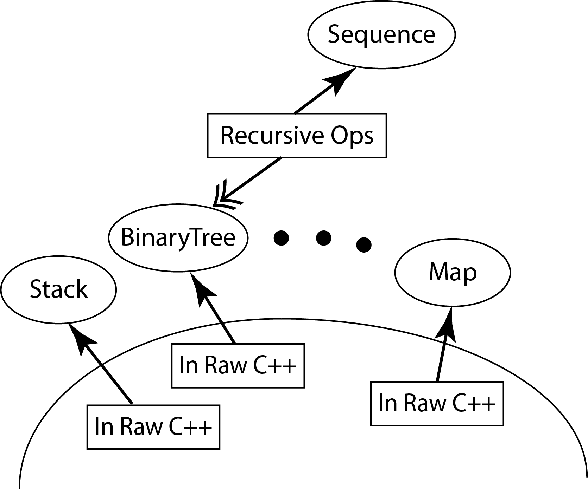
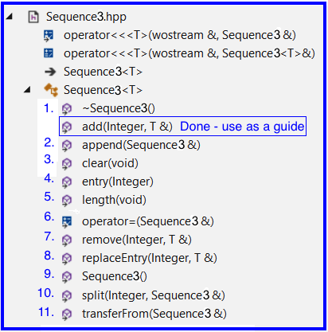

Download ProjP1Starter.zip to your machine - to be used on a subsequent steps
1.2 Copy Sequence3.hpp from the ProjP1Starter.zip
Inside ProjP1Starter.zip is a file named Sequence3.hpp
For this assignment you will be making changes to this file
Copy this file to the following folder on your machine CppDevSp20/components/include/Sequence
1.3 Use Project L5Driver
Use VisualStudio to open the L5Driver project (from assignment L5)
At the top of driver.cpp, change the #include so that it obtains Sequence3.hpp instead of Sequence2.hpp
L5Driver will build correctly if you have followed the instructions in 1.1 - 1.2 (above)
2. ProjP1 Statement of Work
2.1 Primary Objectives
The primary objective of this lab is to provide you experience with:
Layering a component on BinaryTree1 component
This implementation of Sequence will require you to write recursive operations
This will provide us the opportunity to talk about formal methods in the context of recursive operations
Note: this implemenation will not maintain a balanced binary tree

2.2 Specifics
Steps:
Start Visual Studio
Open project L5Driver
Implement each Sequence3 member functions - use the L5Driver command interpreter to test your implementation
Hints:
Sequence3's add operation has already been implemented for you, use it as a guide
Implement all of Sequence3's stubbed out member functions
Look for the TODO comments in Sequence3.hpp
Reference the Sequence layered on Binary Tree instructional materials
Reference the Sequence and BinaryTree specifications
Important Restrictions:
Obey the correspondence - When implementing the member functions you must obey the correspondence internal contract
That means:
assume that the correspondence holds when the member function is called
guarantee that the correspondence holds when the member function exits
Use Design by Contract - No defensive programming of Sequence's operations
What this means is that the implementation of a Sequence operation must not contain code that checks to make sure that the Sequence operation was called correctly by the client
No Cross Calling - None of Sequence's member functions are permitted to make calls to any of the other public Sequence member functions, i.e., no cross calling
All Sequence operations should directly manipulate Sequence's data members
Calling Down - is encouraged (but not required) by creating private member functions that capture code that starts to appear in multiple different places in your Sequence3 implementation. Do this to avoid the duplication of code
Recursion - You must used recursion for all private member functions
About Making Copies -
When implementing Sequence3's operator = you must use the internal component's operator = to make a copy of the data members
Otherwise do not call operator = with the Sequence3 data members or with variables of type T
3. Testing
At a minimum, use L5Driver for your testing
1st - Recommended that you test in Debug mode
2nd - Recommended that you test in Release mode
Like on the previous lab, if you'd like to share your testing scripts or ideas, please feel free to do so
4. Grading Guidelines
Failure of Your Submission to Correctly Compile - 100 out of 100 points
If your submission does not compile correctly so that I cannot run my test cases, zero points will be earned
Violation of "Important Restrictions" (see above) - 40 points maximum
8 points each up to 40 points
Operation Implementations - 60 points maximum
6 points off for each incorrect operation listed in the check list below that does not meet its ensures clause, not to exceed 60 points
Note: this implemenation will not maintain a balanced binary tre

5. Submitting the Lab for Grading
Upload a completed Sequence3.hpp file to the ProjP1 Moodle assignment